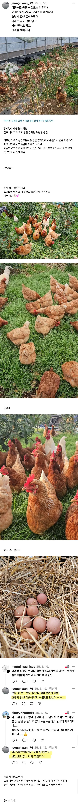

양계장에서 구출한 닭 2년 키운 결과.jpg
댓글
확실히 방목닭이 맛있더라
활동 많은 애 도축한거 보면 기름이 읎어
그리고 겁나 질김
1 2년생은 맛있게 먹음
나이 좀 있는 닭은 좀 그렇더라
그런데 옛날 백숙은 그런 노계를 푹 ~~~ 끓여서 야들야들하게 해서 먹는게 양도 푸짐하고
좋았는데 요즘에는 너무 영계만으로 백숙을 만들어 먹음 ...
누런기름이떠야진짠디
맞음 영계백숙;; 확실히 깊은맛도없고 닭도작고..영..
츄릅츄릊
토실토실한게 후라이드 색이네
개쩐다 ㄷㄷ
ㅋㅋㅋ 빵실빵실해졌네
킹룡
나도 닭 키우고싶은데
집에 자꾸 오소리 족제비 나타남
ㄹㅇ 부모님 농장에 닭장 하나 있는데 족제비 피해 ㅈㄴ 입어서 그물망도 촘촘한거로 바꾸고 바닥 띄우고 별걸 다함
오소리는 우리만 있어도 막는데 족제비<이 씹새낀 땅파고 들어감
족제비 이씹새끼들은 장난으로 학살하고 사라짐
가라아게 사랑은 역시 족제비
동물농장인가 보니깐 바닥 띄워도 닭 똥꾸먹 따먹어서 죽이던데....
닭똥집 맛 기가막히게 찾아다니네
천연기냠물을 위해 투자한다고 생각해좌요
천연기냠냠?
생각을 바꾸세요 .... 닭을 키우는게 아니라 오소리 맘, 족제비 대디를 한다고 생각하세요 .... ㅋ
와 치킨 많ㄴ
왜
군대랑 제대후로 비교가 되냐 몇번을 봣는데 오늘은 갑자기 그런생각이 드네ㅋㅋ
폐계-알을 못낳는(x) 알을 안낳는(o)
이라고 함.
요거 코코보라 유튜버가 놀러간거 있었는데 닭들 ㅈㄴ건강함
https://youtu.be/_pfZsHPVLYA?si=V-g0sUtMaV2fi1t_
안정적이야
사장님 여기 백숙 하나 ~!
진짜 빵실빵실하네
환우 중인 닭인데, 또 멍청한 소리 시작하네
환우 중인 닭이 뭐임?
깃털갈이. 물만주고 사료를 끊으면 깃털이 다 빠진후 새로 나면서 산란율도 어느정도 올라옴
브라질 닭 품종으로 만든 후라이드 먹어보고싶다
존나큰거
순살치킨 시켜먹으면 되지
존나 큰 닭다리랑 닭봉 뜯어먹는 쾌감
칠면조ㄱ
뭐말하는지 알겠는데 모든 브라질 닭이 다 그 큰 닭인거 아님
한국에서 닭 수입산이면 보통 브라질닭임 이미
글이 엄청 귀엽다

닭도 저러는데 출산률 낮은 한국인들은 얼마나 가혹한 환경에 있는건지 ㅋㅋㅋㅋㅋ
아 치킨 존나 땡기네 쉬바껏
털찌고나니까 엄청 예쁘네
닭이 생각보다 이쁘구나
귀엽다
맛은 굉장히 안정적이야